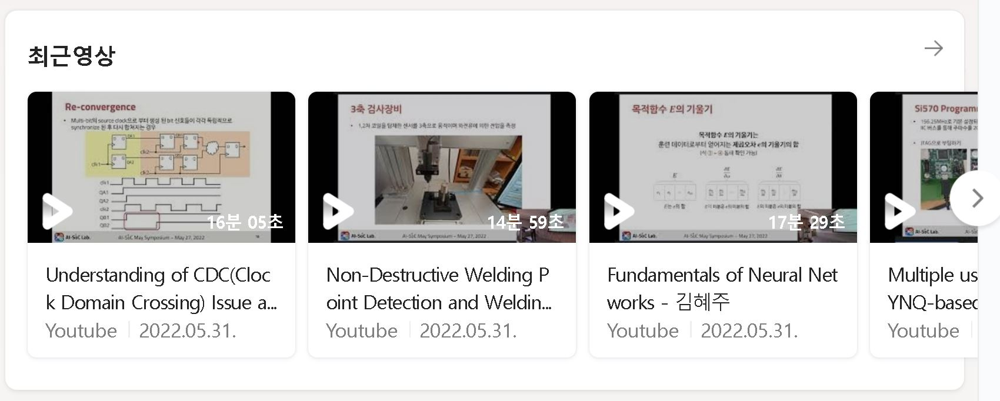
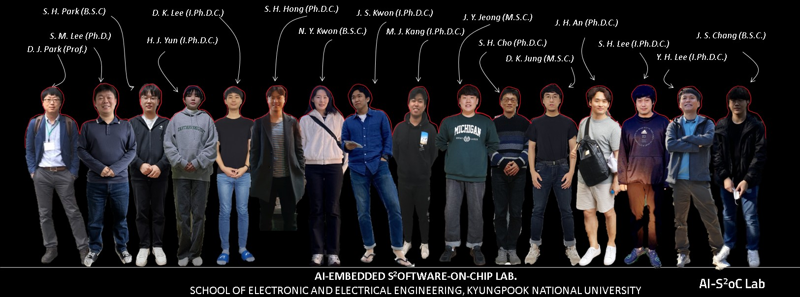
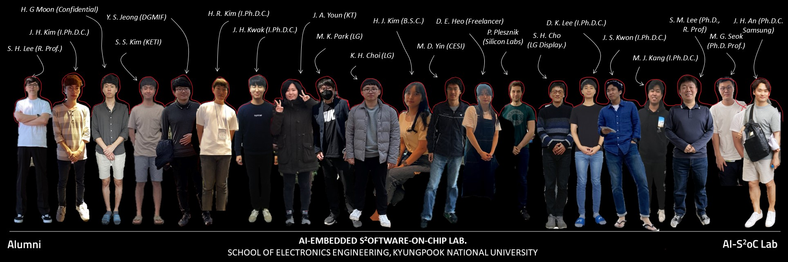

AI-Embedded S2oftware-on-Chip Lab
 Welcome to AI-Embedded S2oftware-on-Chip (AI-SoC) Lab. Our research group focuses on the following architecture to realize the accelerated intelligence in systems-software-on-chip by dynamic partial replacement of on-chip hardware and embedded software.
Welcome to AI-Embedded S2oftware-on-Chip (AI-SoC) Lab. Our research group focuses on the following architecture to realize the accelerated intelligence in systems-software-on-chip by dynamic partial replacement of on-chip hardware and embedded software.
 |
|  |
Active Members
|  |
{kind=link}
Alumni
|  |
{kind=link}
For Prospective Applicants
Open Position in SoC/Circuit Design Team by Industrial Collaboration Program
Open Industrial Internship Program in domestic/international IT company
Open Visiting Scholar Position by International Academia Collaboratoin Program
News

2023-02 Congratulation !! Ms. Kwon and Mr. Park are now with our lab as Ph.D student, They received their B.S. degrees in electronics engineering field.
2023-02 Congratulation !! Dr. Seok is now with Dongkuk University as assistant professor.
2023-01 Ms. Youn presented her research about the vision chip implementation in IEEE ICCE 2023 and CES Show, Las Vegas, USA
2022-10 Ms. Nayoung Kwon, and Ms. Heuijee Yun participated in IEEE Micro 2022 Conference in Chicago, USA during 8 days
2022-09 Mr. Kwon's journal paper was accepted in IEEE Access (IF 3.476) with Large-Scaled Vehicle IoT Collaboration Research
2022-08 Dr. Seok's journal paper was accepted in IEEE Transactions on Industrial Informatics (IF 11.648, Top Ranked < 3%) with AI Digital Twin-based Smart Factory Research
2022-07 Dr. Lee's journal paper was accepted in Human-centric Computing and Information Sciences (HCIS, IF 6.558 SCIE, Q1 Grade) with Comparative Neural Network Research for ECG Signal Processing.
2022-07 Mr. Chang's paper was accepted in the 2022 ACM SIGBED International Conference on Embedded Software (EMSOFT 2022 as one of the top ranked flagship conferences in embedded software field) with Accuracy-Area Efficient Online Fault Detection for Robust Neural Network Software-Embedded Microcontrollers for Robust AI-Enabled Software Execution.
2022-06 Our lab received a research grant (6th Division Co-PI) from KNU AI Grand ICT Research Center, focusing on AI-based Smart Factory Virtualization.
2022-05 Our lab received a research grant (PI) from Minstry of Education, focusing on Intelligent Streamable AI Microservice Runtime Platform for Edge-Serverless Metaverse Infrastructure.
2022-05 Our lab received a research grant (Co-PI) from Ministry of Science and ICT toward establishing Processing-in-Memory (PIM) Semiconductor Design Research Center during 7 years.
2022-04 Prof. Park was awarded with Legion of Merit by Prime Minister of Korea Government and nomiated as a man of merit in Korea Science and ICT memorial day.
2022-04 Mr. Hong's SCI-indexed journal paper was accepted in Sensors (Q1, IF 3.576) with Hybrid Deep Learning-based Lightweighted AI Autonomous Car Control Platform.
2022-04 Our lab received a research grant (PI) from Ministry of Science and ICT, focusing on AI On-Demand Code Streamable Edge-Cloud Connected OpenAPI HW/SW Execution Platform.
2022-03 Next Generation Research Group in Carnavicom started to support our Lab with Industry-Academy Collaboration Grant.
2022-03 Our Lab started to collaborate Next Generation AI-MCU R&D via Industry-Academy Program.
2022-02 Prof. Park was nominated as Professor to teach Automotive On-Chip Embedded System/Software for Hyundai Motor Group.
2022-02 Mr. Peter's FPGA-based DSP Accelerator paper was accepted to IEEE Access. (SCIE Q1, IF 3.576)
2022-01 Artificial Intelligence (AI) Hardware Center in Seoul National University started to support our Lab.
2022-01 Undergraduate student (1st grade) Mr. Jang's journal paper was accepted to Electronics. (SCIE Q2, IF 2.397)
Sponsored Active Research Grants
Our research group has been sponsored from the national research fund (NRF), research institutes and various industrial companies. Welcome to contact us about the technology transfer, technical consulting, and discussion for future collaboration.
AI Grand ICT Research Center 6th Division for ICT Smart Factory Research, 2022-2029, IITP
Streamable AI Microservice Runtime for Edge-Serverless Metaverse Infrastructure, 2022-2025, NRF.
AI Processing-in-Memory (PIM) Semiconductor Design Research Center, 2022-2028, IITP.
AI On-Demand Code Streamable OpenAPI HW/SW Execution Platform, 2022-2023, IITP.
Intensive School on Embedded System Software for Hyundai Motor Group, 2022, HNGV.
Multidisciplinary Research Training and Development Enterprise for AI and Semiconductor Technology, 2022-2025, SNU.
Metamorphic Unstructured Validation/Verification for Analyzing Binary Code, 2021-2025, IITP.
Self-Organized Community Computing Platform for Resilient Environment, 2018-2027, NRF.
BK21 Four Project in School of Electronic and Electrical Engineering, KNU, 2020-2028, NRF.
IC Design Education Center (IDEC) EDA Software Tool License Support, 2016-2022, IDEC.
Supported By
 |
Contact
| 80 Daehak-ro, Buk-gu,
School of Electronics Engineering, Kyungpook National University (KNU) IT-1 Building, no.719, Tel. 053-950-5548 Daegu, South Korea, 41566 Email: boltanut at knu.ac.kr Office Hours: pre contact |